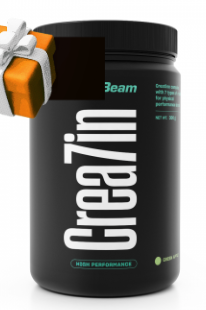

CREATINE GREEN APPLE
Crea7in je komplexní směs, která sestává ze 7 druhů kreatinu pro funkční účinek.
Samotný kreatin totiž zvyšuje fyzickou výkonnost během krátkodobých po sobě
následujících intervalech intenzivního tréninku.
Složení pro maximální komplexnost
doplňuje také l-citrulin. Tuto směs tak ocení siloví sportovci, příznivci
crossfitu či HIIT tréninků.